When dealing with n-port parameters it may be necessary or convenient to convert them into other matrix representations used in electrical engineering. The following matrices and notations are used in the transformation equations.
|
|
= | inverted matrix of 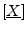 |
| 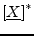 | = | complex conjugated matrix of |
| 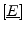 | = | 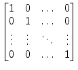 identity matrix |
|
|
= | S-parameter matrix |
|
|
= | impedance matrix |
| 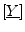 | = | admittance matrix |
| 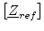 | = | 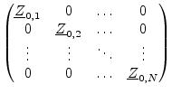 |
| 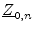 | = | reference impedance of port |
| 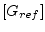 | = | 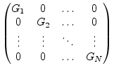 |
| = | 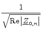 | |
During S-parameter usage it sometimes appears to have not all components
in a circuit normalized to the same impedance. But calculations can only
be performed with all ports being normalized to the same impedance. In
the field of high frequency techniques this is usually  . In order
to transform to different port impedances, the following computation must
be applied to the resulting S-parameter matrix.
. In order
to transform to different port impedances, the following computation must
be applied to the resulting S-parameter matrix.
| (15.1) |
With
| = | reference impedance of port |
|
| 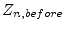 | = | reference impedance of port |
|
|
= | original S-parameter matrix |
| 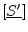 | = | recalculated scattering matrix |
| 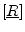 | = | 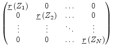 reflection coefficient matrix |
| 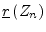 | = | 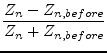 |
| 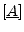 | = | 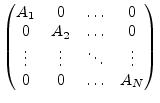 |
| 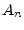 | = | 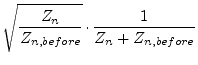 |
S-parameter, admittance and impedance matrices are not limited to One- or Two-Port definitions. They are defined for an arbitrary number of ports. The following section contains transformation formulas forth and back each matrix representation.
Converting a scattering parameter matrix to an impedance matrix is done by the following formula.
| 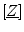 | 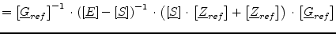 | (15.2) |
| 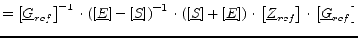 | (15.3) |
Converting a scattering parameter matrix to an admittance matrix can be achieved by computing the following formula.
| 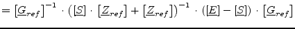 | (15.4) | |
| 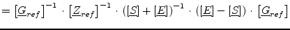 | (15.5) |
Converting an impedance matrix to a scattering parameter matrix is done by th following formula.
| 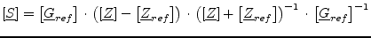 | (15.6) |
Converting an admittance matrix to a scattering parameter matrix is done by the following formula.
Converting an impedance matrix to an admittance matrix is done by the following simple formula.
| 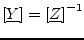 | (15.8) |
Converting an admittance matrix to an impedance matrix is done by the following simple formula.
| 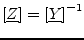 | (15.9) |
There are five different matrix forms for the correlations between the quantities at the transmission twoport shown in fig. 15.1, each having its special meaning when connecting twoports with each other.
| 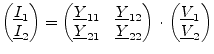 | (15.10) |
| 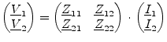 | (15.11) |
| 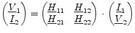 | (15.12) |
| 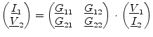 | (15.13) |
| 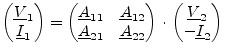 | (15.14) |
![\fbox{\begin{minipage}[t]{0.22\linewidth}
\centering
parallel-parallel connection\\
\includegraphics[height=2.5cm]{twoportpp}
\end{minipage}}](img2664.png) |
|
|
|
|||
![\fbox{\begin{minipage}[t]{0.85\linewidth}
\centering
cascaded twoports\\
\includegraphics[height=1.3cm]{twoportch}
\end{minipage}}](img2668.png) |
||||||
Basically there are five different kinds of twoport connections. Using the corresponding twoport matrix representations, complicated networks can be analysed by connecting elementary twoports. The linear correlations between the complex currents and voltages rms values of a twoport are described by four complex twoport parameters (i.e. the twoport matrix). These parameters are used to describe the AC behaviour of the twoport.
| A | Y | Z | H | G | |
| A | 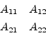 |
![\fbox{\makebox[0.15\linewidth ][c]{$\begin{array}{cc}\dfrac{-Y_{22}}{Y_{21}}&\df...
...}}\vspace{4pt}\\ \dfrac{-\Delta Y}{Y_{21}}&\dfrac{-Y_{11}}{Y_{21}}\end{array}$}}](img2675.png) |
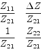 | 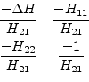 | 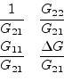 |
| Y | 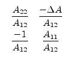 | 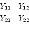 |
 |
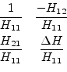 |
 |
| Z | 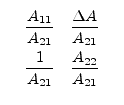 | 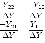 | |||
| H | |||||
| G |
There are two different matrix forms for the correlations between the quantities at the transmission twoport shown in fig. 15.2.
| (15.15) |
| (15.16) |
When connecting cascaded twoports it is possible to compute the resulting transfer scattering parameters by the following equation.
| (15.17) |
According to Janusz A. Dobrowolski [59] the following table contains the matrix transformation formulas.
| S | T | |
| S | ||
| T |
Sometimes it may be useful to have a twoport matrix representation
based on signal waves in a representation based on voltage and current
and the other way around. There are two more parameters involved in
this case: The reference impedance at port 1 (denoted as  ) and
the reference impedance at port 2 (denoted as ).
) and
the reference impedance at port 2 (denoted as ).
Converting from scattering parameters to chain parameters results in
| (15.18) | ||
| (15.19) | ||
 |
(15.20) | |
 |
(15.21) | |
|
Converting from chain parameters to scattering parameters results in
| ||
| (15.22) | ||
| (15.23) | ||
| (15.24) | ||
| (15.25) | ||
Converting from scattering parameters to hybrid parameters results in
| (15.26) | ||
| (15.27) | ||
| (15.28) | ||
| (15.29) | ||
|
Converting from hybrid parameters to scattering parameters results in
| ||
| (15.30) | ||
| (15.31) | ||
| (15.32) | ||
| (15.33) | ||
Converting from scattering parameters to the second type of hybrid parameters results in
| (15.34) | ||
| (15.35) | ||
| (15.36) | ||
| (15.37) | ||
|
Converting from the second type of hybrid parameters to scattering parameters results in
| ||
| (15.38) | ||
| (15.39) | ||
| (15.40) | ||
| (15.41) | ||
Converting from scattering parameters to Y-parameters results in
 |
(15.42) | |
| (15.43) | ||
| (15.44) | ||
| (15.45) | ||
|
Converting from Y-parameters to scattering parameters results in
| ||
| (15.46) | ||
| (15.47) | ||
| (15.48) | ||
| (15.49) | ||
Converting from scattering parameters to Z-parameters results in
| (15.50) | ||
| (15.51) | ||
| (15.52) | ||
| (15.53) | ||
|
Converting from Z-parameters to scattering parameters results in
| ||
| (15.54) | ||
| (15.55) | ||
| (15.56) | ||
| (15.57) | ||
Basically the twoport parameters of passive twoports can be determined using Kirchhoff's voltage law and Kirchhoff's current law or by applying the definition equations of the twoport parameters. This has been done [60] for some example circuits.
|
|
|
|
|
![\includegraphics[height=2.5cm]{twoportss}](img2665.png)
![\includegraphics[height=2.5cm]{twoportps}](img2666.png)
![\includegraphics[height=2.5cm]{twoportsp}](img2667.png)
![\includegraphics[height=3cm]{twoportab}](img2699.png)
![\includegraphics[width=5cm]{tcircuit}](img2571.png)